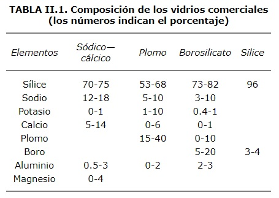

COMO acabamos de leer en el capítulo anterior, la materia prima básica para hacer un vidrio son las arcillas. Cuando a esta materia se le agregan distintos compuestos químicos se obtienen diferentes tipos de vidrio. Con base en su composición química se puede hacer una clasificación como la que aparece en la tabla II.1, donde se resumen los compuestos y elementos que poseen los vidrios comerciales más comunes.

Para hablar detalladamente de cada uno de ellos sigamos el mismo orden de la tabla.
EL VIDRIO SÓDICO-CÁLCICO
Está formado por sílice, sodio y calcio principalmente. La sílice es parte de la materia prima básica, el sodio le da cierta facilidad de fusión y el calcio la provee de estabilidad química. Sin el calcio el vidrio sería soluble hasta en agua y prácticamente no serviría para nada. ¿Te imaginas un vaso que se deshiciera con el agua?
Este tipo de vidrio es el que se funde con mayor facilidad y el más barato. Por eso la mayor parte del vidrio incoloro y transparente tiene esta composición. Las ventanas de los edificios, desde la más grande hasta la más pequeña están hechas con este vidrio. Lo único que cambia de una diminuta ventana a un ventanal de enormes dimensiones es el espesor. Está tan estudiado el grosor en relación con el tamaño, que hay una clasificación y una reglamentación para el tipo de vidrio que se debe usar en cada construcción. En la figura 19 se ilustra el espesor necesario del vidrio, según el tamaño de la ventana. Por ejemplo, un ventanal de 200 cm de altura tiene que tener entre 75 y 100 mm de espesor.

|

|

|

|